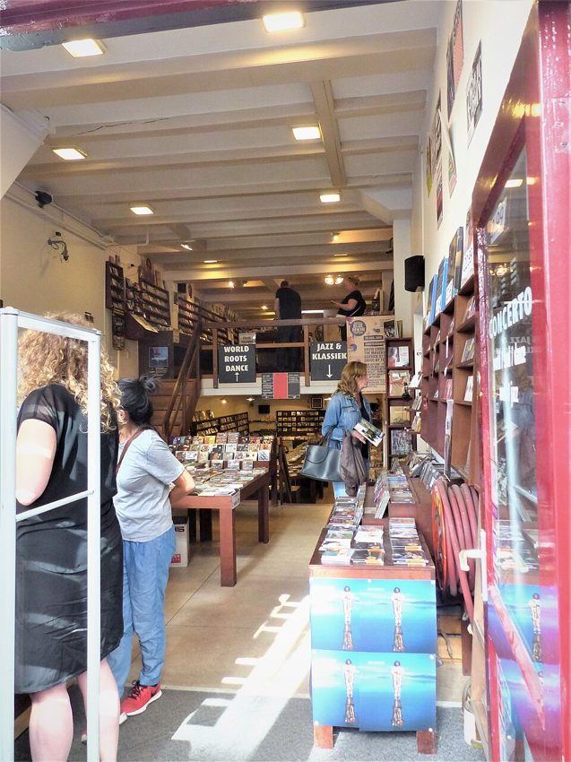
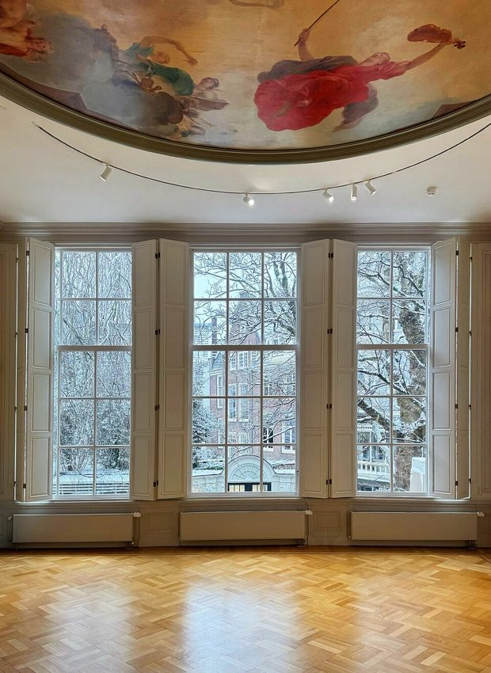
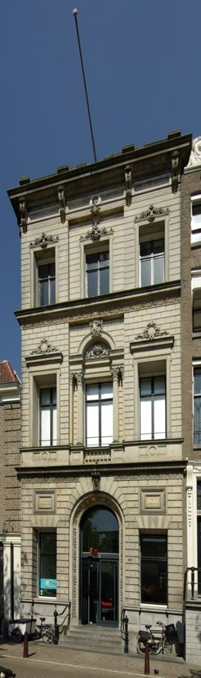

Bocca Coffee
Roaster’s espresso bar where you can taste coffees and talk brewing.
Hours, bookings & sources
Kerkstraat 96. Independent specialty guide lists the bar; verify café hours rather than using the webshop’s hours.
The canal ring was a planned 17th-century expansion, not an accidental maze of picturesque waterways. Its grand houses now hold photography at Huis Marseille and Foam; Utrechtsestraat adds design shops and Concerto’s five adjoining record-store premises.
Neighbourhood background ↗
Roaster’s espresso bar where you can taste coffees and talk brewing.
Kerkstraat 96. Independent specialty guide lists the bar; verify café hours rather than using the webshop’s hours.
Independently founded café and roastery in Weteringbuurt.
Weteringstraat 48. Official location page and European Coffee Trip both list the bar.
Ceremonial-matcha specialist near the Spiegelkwartier galleries.
Nieuwe Spiegelstraat 49, not the former Elandsgracht location; location independently corroborated by Amsterdam Now.

Photographed at the venueFive connected premises and dependable volume for jazz digging.
Published Mon/Sun 12–18, Tue–Sat 10–18. Near the southern canal belt, not Spuistraat.
Photograph: Wikimedia Commons (CC BY-SA 4.0); cropped for display.
Dutch furniture and objects in a canal-side design showroom.
Published pages disagree on Tuesday access; check directly. Prinsengracht 645.

Photographed at the venueMartine Gutierrez’s photography and self-portraiture—only through 18 October.
Wunderkind runs through Sunday 18 October 2026. Visit by Friday if racing Sunday; museum may close for changeover after the exhibition. Published 10–18, Thursday to 21.
Discovery & evidence:
Photograph: Wikimedia Commons (CC BY 4.0); cropped for display.

Photographed at the venueFashion and identity photography from Hailun Ma, plus Nadav Kander’s atmospheric landscapes.
Hailun Ma: Hometown 18 Sep 2026–20 Jan 2027; Nadav Kander: The Edge of Things through 31 Jan 2027; Keerthana Kunnath also on through 27 Nov. Published Thu–Fri until 21. Walk-ins welcome; online booking advised but no mandatory slot. Building sustainability works may be noticeable.
Discovery & evidence:
Photograph: Wikimedia Commons (CC BY 3.0); cropped for display.
A strange invented world in new drawings and paintings, not a standard museum stop.
Solo show 9 Oct–14 Nov 2026. Leidsegracht 38–40, published Tue–Sat 11–18; no timed-ticket requirement stated.